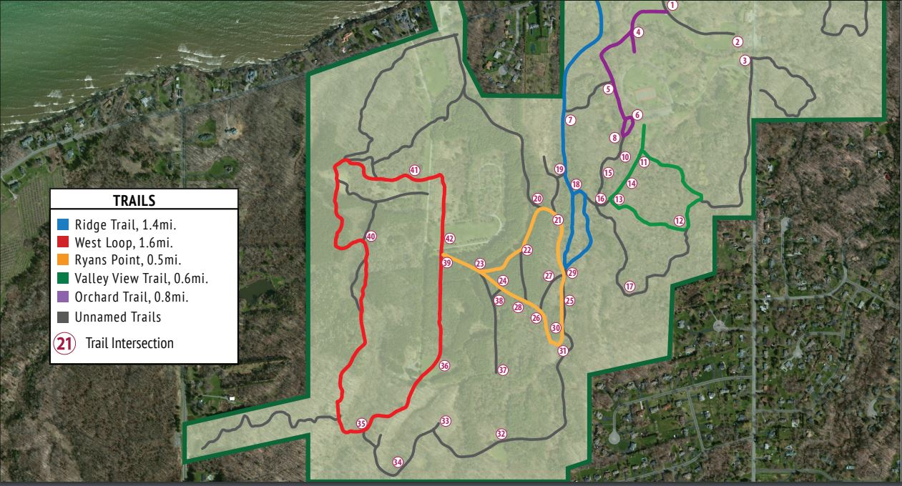

With over 550 acres of land to explore, you'll have plenty to do at Webster Park! Sitting right on Lake Ontario, you can head out on our pier to view the lake and Canada beyond. Take advantage of large open spaces for events and activities, such as birthday parties or general get-togethers. We also have areas for:
Check out our numerous trails and enjoy the beautiful scenery as you walk, hike, or run through different areas of the park! Take a look at the trail map below before you head out into the woods and begin your adventure.
